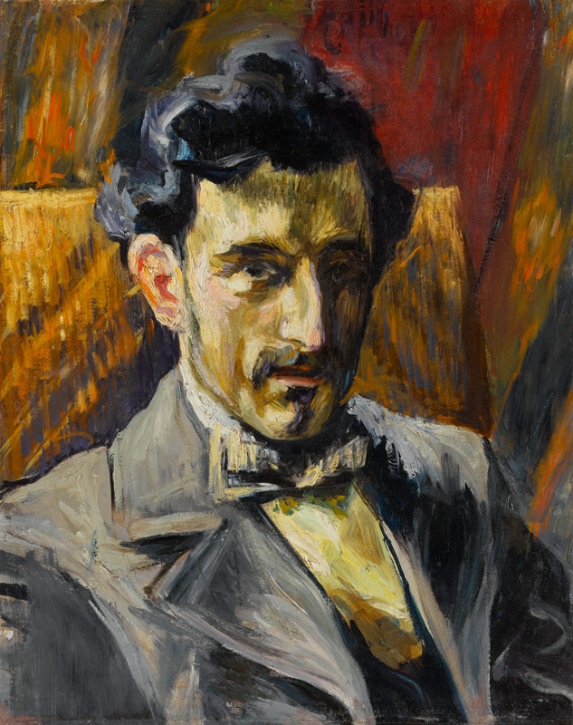
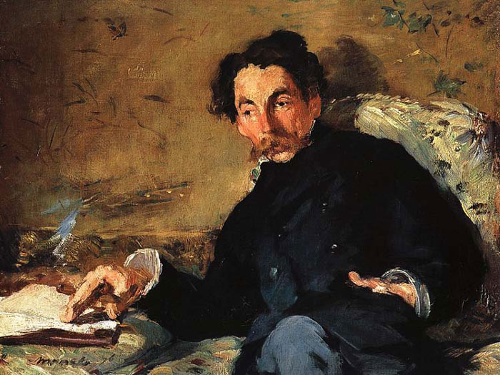

Exploring how Debussy transformed music and inspired generations of composers.
Debussy’s influence stretches across both classical and modern music, leaving a lasting mark on generations of composers. His pioneering use of non-traditional scales, unresolved dissonances, and fluid rhythms inspired French composers such as Maurice Ravel, Erik Satie, and Olivier Messiaen, who continued to explore new textures and colors in their compositions. Beyond France, composers like Igor Stravinsky and Béla Bartók were influenced by Debussy’s harmonic innovations, particularly his approach to modal and whole-tone scales, which opened new possibilities for orchestration and melodic expression.
Debussy’s impact was not limited to classical music. In jazz, artists and arrangers such as Bill Evans, Duke Ellington, and modern improvisers drew on Debussy’s harmonic freedom and tonal colors to expand improvisational possibilities. His approach to atmosphere, subtle dynamic shading, and evocative musical imagery helped establish a framework for impressionistic and experimental music throughout the 20th century. Debussy’s music encouraged listeners and performers alike to focus on timbre, mood, and emotional nuance, rather than conventional forms or strictly structured melodies.
In addition to his compositions, Debussy was an accomplished writer and critic. He published numerous essays and articles on music theory and aesthetics, emphasizing personal expression, subtlety, and beauty. He encouraged audiences and fellow musicians to listen attentively for color, texture, and nuance, rather than merely following the melody or structure. His writings reveal a composer deeply concerned with the philosophical and emotional impact of music, making him not just a creator but also a thinker who influenced musical thought in his era and beyond.

Ravel, among others, was deeply influenced by Debussy’s harmonic innovations.

Debussy’s music parallels the visual Impressionist movement in evoking mood and atmosphere.